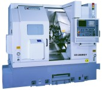
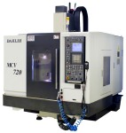

|
Ülkemizde imalatçýlarýmýzýn dikkat etmesi gereken unsurlarýn baþýnda "doðru CNC tezgah seçimi" gelmektedir. Birçok imalatçý, imal ettiði ürüne uygun, ihtiyaçlarýný tam olarak karþýlamayan makineleri yeterli doðru bilgi, alamamaktan dolayý yanlýþ seçim yapmaktadýr. Bu da imalatýnda istenilen hassasiyetleri yakalayamama, imalat hýzýný yavaþlatma, kesici takým maliyetlerinin artmasý ve fazla operasyonla imalat gerçekleþtirmesi gibi problemleri meydana çýkarmaktadýr. Ýmalatýn verimli, hassas ve hýzlý yapýlabilmesi için çok da zor olmayan fakat imalatýmýzýn verimliliði açýsýndan bilmemiz gereken belli baþlý genel kriterler aþaðýda sýralanmýþtýr.
1. Ýmalatý Yapýlmasý Düþünülen Parçalarýn Boyutlarýnýn Analiz Edilmesi:
Firmalar Tezgah yatýrýmý yapmadan önce, imalatýndaki parçalarýn boyutlarýný, en küçükten en büyüðe kadar analiz yapmalý, Yatýrýmýný yapmayý düþündüðü tezgahýn imalat kapasitesi imalatýný gerçekleþtirdiði parçalarýn %85 ini iþleyebilecek kapasitedeyse tezgahýn iþleme kapasitesinin yeterli olduðu düþünülmelidir. Çünkü daha büyük kapasiteli tüm imalatý kapsayabilecek bir tezgah, hem ilk yatýrým maliyeti açýsýndan yüksek olup fark %15'lik imalat dýþýnýn getirisinden çok yüksek kalacak hem de asýl imalatýnýzýn yoðunlaþtýðý küçük parçalarda imalat sürenizi arttýracaktýr. Unutmayýn ki ,imalattaki en büyük kayýplarýmýz makinelerimizin verimsiz çalýþtýrýlmasýdýr.
2. Yatýrýmý Düþünülen Makinenin Mekanik Yapýsýnýn Uygunluðu:
Ýmalatý yapýlacak parçanýn, talaþ kaldýrma deðerlerini dikkate alarak bu talaþý kaldýrabilecek mekanik yapý ve motor gücüne sahip makineler seçilmelidir. Unutmamalýdýr ki ayný kesme hýzýnda ne kadar fazla talaþ derinliðine girerseniz takým ömrü deðiþmeyecek fakat yapýlan iþ miktarý artacaktýr. Ýmalatý yapýlacak parça vuruntulu (yani, döküm, dövme, paslanmaz, eksen kaçýklýðý olan parçalar..vs) ise kutu kýzak diye tabir edilen Turcite B kaplanmýþ sürtünmeli kýzak yapýlý tezgahlar tercih edilmelidir. Böylece makine gövdesinde oluþabilecek titreþimler minimuma indirilecek takým ömrü artacak, makine hassasiyeti ve ömrü de artacaktýr. Parça iþleme esnasýnda oluþabilecek tüm darbeler geniþ kutu kýzaklar tarafýndan karþýlanacaktýr. Sürtünmeli (Kutu) kýzaklý sistemlerde 5 yýlda bir Turcite deðiþtirilmesi kýzaklarýn ömrünü de arttýracaktýr. Darbesiz, (sarý, alüminyum, yumuþak çelik..vs) parçalarda ise eksen hýzlarýnýn fazla olduðu lineer kýzaklý CNC tezgah seçimi imalat hýzýna etkisinden dolayý tercih edilmelidir.
3. CNC Tezgahýnýn Kontrol Ünitesinin Seçimi:
Birçok kontrol ünitesi olmak üzere Türkiye de imalatçýlar aðýrlýklý olarak Fanuc kontrol üniteli tezgahlar kullanmaktadýrlar. Bizde bu kontrol üniteleriyle ilgili bilgi sunmak istiyoruz. CNC torna seçiminde küresel imalat (rot, vana küresi..vs) yapýlacaksa dairesel geçiþleri düzgün yapabilen ön okumalý kontrol üniteleri seçilmelidir. (Oi-TC, 21-IT, 18-IT, 16-IT) Eðer çok progresif dairesel geçiþ olmayan yüzey iþlemli imalatlarda Fanuc Oi-Mate serisi tezgahlar seçilebilir. CNC Ýþleme merkezlerinde ise, Kalýp, gravürlü yüzeyler, eliptik yüzeyler iþlenecek ise AICC veya AI NANO kontrollü (look ahead fonksiyonlu) önden blok okuma deðerleri yüksek kontrol üniteleri tercih edilmelidir (21Ý-MB, 18Ý-MB, 16Ý-MB ..). Makine parçasý, yedek parça imali gibi iþlerde Ön okuma deðerleri yüksek olmayan Fanuc Oi-Mate, OÝ-MC tarzý kontrol üniteleri seçilebilir. Böylece daha ekonomik olan bu kontrol üniteleriyle tüm imalatýmýzý ayný hassasiyet ve hýzlý þekilde yapabiliriz. |